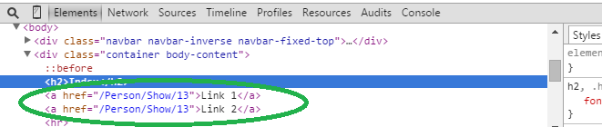

Lage link med Html.ActionLink
Html.ActionLink-metoden har mange overloads, dvs mange forskjellige måter man kan kalle metoden på avhengig av hvilke parametere man vil sende med:
- linkText - Teksten på linken i skjermbildet
- action - Navnet på den Action-metoden linken skal peke på
- controller (frivillig) - Navnet på Controlleren
- routeValues (frivillig) - Parametere som skal med i URL'en
- htmlAttributes (frivillig) - Attributter på html-taggen som opprettes
@Html.ActionLink("Link 1", "Show", new { @id = 13 })Lage link med Url.Action
Url.Action-metoden er veldig lik som Html.ActionLink, men denne genererer ikke noe html - kun selve URL'en. Vi må derfor skrive html'en selv:
<a href="@Url.Action("Show", new {@id = 13})">Link 2</a>Index.cshtml kan vi refreshe siden og teste at linkene fungerer.
Hvis vi tar en titt i consolen i nettleseren (høyre-klikk på linken og trykk "inspect element") ser vi at linkene våre er helt identiske: 
<= Tilbake